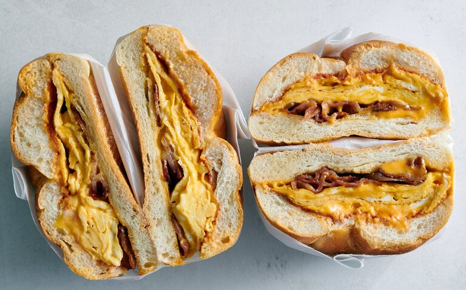

The BACONEGGNCHEESE

The New York legend, baconeggncheese, keeps hundreds of thousands up and running. A perfect union of bacon, egg, and cheese. I miss New York.
Ingredients:
- Unsalted butter, as needed
- 1 kaiser roll, split (or 1 bagel, split, or 2 slices of bread, toasted and buttered)
- 3 slices of beef, pork or turkey bacon (not thick-cut), halved crosswise
- 2 large eggs, beaten with a fork
- Kosher salt and black pepper
- 2 slices American cheese
- Ketchup and/or hot sauce (NOT OPTIONAL)
Preparation:
- Bring a large piece of parchment paper or foil to the stove. Heat a medium (10-inch) nonstick skillet over medium. Grease the skillet generously with butter. Place one side of the roll in the skillet, cut-side down, and toast until golden, 2 to 4 minutes. Transfer the toasted half to the parchment, cut-side up. Repeat with more butter and the other half of the roll. (The second side will take less time, as the pan gets hotter.)
- If you're using beef or turkey bacon, add 1 tablespoon butter to the skillet. Add the bacon and cook over medium until browned and crisp, 2 to 4 minutes per side. As the bacon cooks, press it down with a spatula. (This helps the fat render, producing crunchier bacon.) Turn off the heat and transfer the bacon to the bottom roll. Pour off all but 1 tablespoon of the fat.
- Pour the eggs into the skillet, season with salt and pepper and set over medium-low. Using a spatula, pull the egg toward the center and tilt the skillet so the egg runs to the empty part of the skillet. Repeat this all around until the surface of the egg is no longer runny but still shiny. Add the cheese on the top, tearing into smaller pieces for even coverage. Cook, undisturbed, until the top of the egg is matte, just a minute. Remove from heat, fold the egg in half, and then in half again. Transfer to the bottom roll.
- Add ketchup and hot sauce as desired, then add the top roll and press down. Wrap in the parchment, smush again, and let sit for a couple minutes for all the elements to steam together. Cut in half and eat.